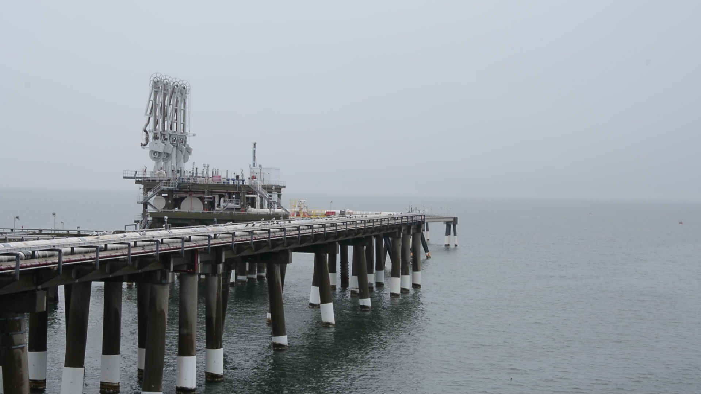
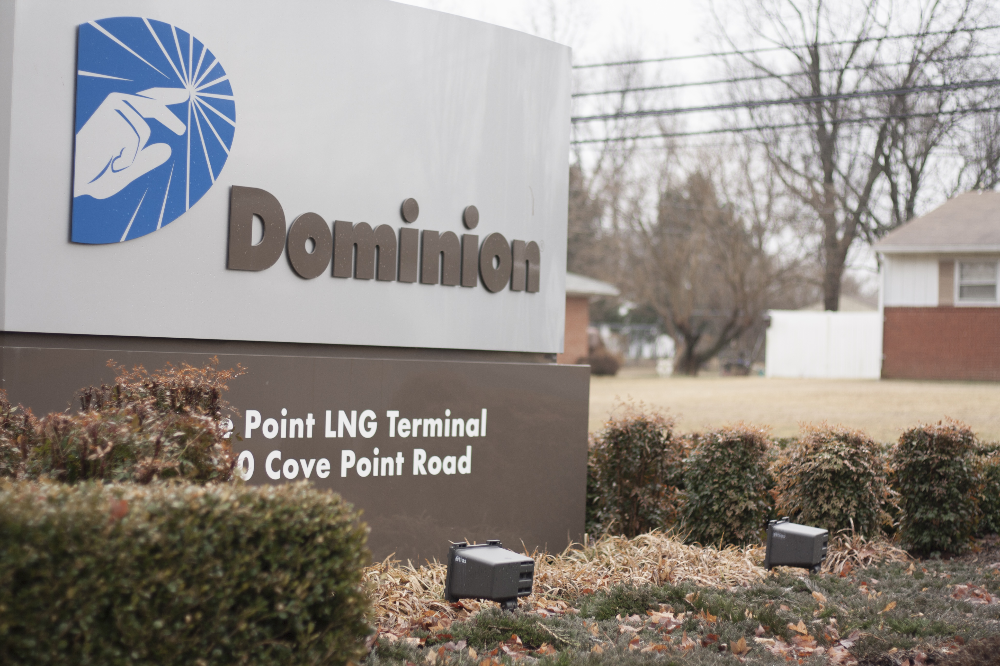
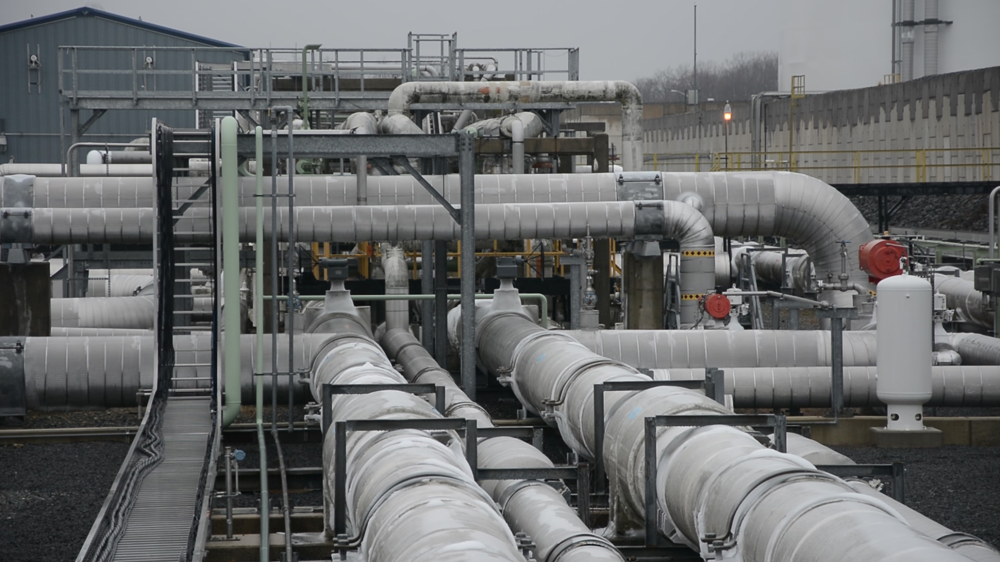

Cove Point: The Transition from Imports to Exports
The natural gas pipes on Dominion’s Cove Point property in Lusby, Md., have been chilled to around negative 260 degrees Fahrenheit. That’s because the natural gas that will eventually flow through them will need to be in liquid form, super-cooled, in order to travel from tankers to the shore.
Cove Point will export its first tankers of liquefied natural gas — liquefied because it needs to be transported across the ocean from the U.S. to Japan, India and Spain. A wave of these ships is expected to come out of Maryland’s sole natural gas export facility in 2017.
Cove Point, owned by the Virginia-based Dominion Resources, is one of the only natural gas export facilities in the U.S. It’s also a big part of the regional and national economy and natural gas future, say supporters, while opponents point to environmental concerns.
Cove Point facility in Lusby, Md. (Capital News Service photo by Amanda Salvucci)
From the Eastern Shore to the Western Mountains
Paul Roberts, who owns Deep Creek Cellars, a winery in Garrett County, in the mountainous, westernmost corner of Maryland, has long been concerned about Dominion’s role in exporting natural gas.
He has been following the issue closely for years. He’s organized opposition to fracking — a controversial method of extracting natural gas from shale rock formations — in Garrett County.
But Cove Point, more than 200 miles from the shale in western Maryland, is still close to his heart.
“We’re now seeing liquefied natural gas being exported at Cove Point,” Roberts said. “And the real question is, at what price, at what risk, and who benefits?”
Cove Point facility in Lusby has been importing liquefied natural gas for more than 30 years. Dominion acquired the facility in 2003 and plans to build a facility to export LNG. (Capital News Service photo by Amanda Salvucci)
The Economics of Natural Gas
In addition to environmental concerns surrounding the plant, Cove Point also has major economic implications for Maryland, say advocates.
Supporters say the facility has created hundreds of jobs in Calvert County and will provide a long-term economic boost to the region. Dominion said the facility will bring in an estimated $40 million in annual tax revenue to the state.
The export facility will also have a major impact on the global natural gas market, according to analysts.
“This is about liquefied natural gas, and we know from the statistics that the demand for LNG is going to be growing internationally,” said David Buch, an energy analyst with Dominion Resources.
Pipes at the Cove Point facility, Lusby, Md. (Capital News Service photo by Amanda Salvucci)
Public Reactions and Environmental Concerns
Many environmental groups and local residents have raised concerns about the potential effects of fracking and natural gas exports. A large demonstration took place at Baltimore City Hall in February 2014, where activists expressed their opposition to the expansion of natural gas infrastructure in the state.

Anti-fracking demonstrators march at Baltimore City Hall, Feb. 20, 2014. (Capital News Service photo by Amanda Salvucci)
Global Impacts
The transition from imports to exports at Cove Point is part of a broader shift in the U.S. energy landscape. The growing market for liquefied natural gas exports is expected to reshape global energy markets.

LNG import and export prices, 2000-2013. (Capital News Service graphic by Amirah Al Idrus and Hyon-Young Kim)